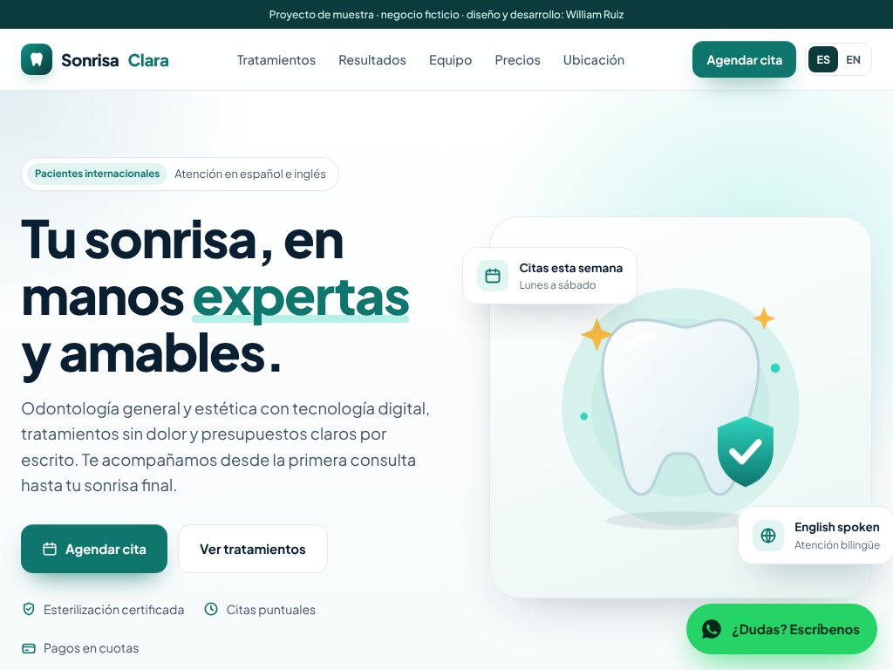

Proyectos

Sonrisa Clara NuevoLanding page bilingüe para clínica dental: tratamientos, antes y después interactivo, equipo, precios y citas por WhatsApp.
SaludES / ENCitas por WhatsApp
Ver proyecto →
La Ola DoradaLanding page para cevichería: menú por categorías, pedido armado y envío directo por WhatsApp.
RestauranteES / ENPedidos por WhatsApp
Ver proyecto →
AgroSurcoLanding page para insumos agrícolas: catálogo, planes de asesoría y formulario que envía la solicitud por WhatsApp.
AgroES / ENFormulario a WhatsApp
Ver proyecto →